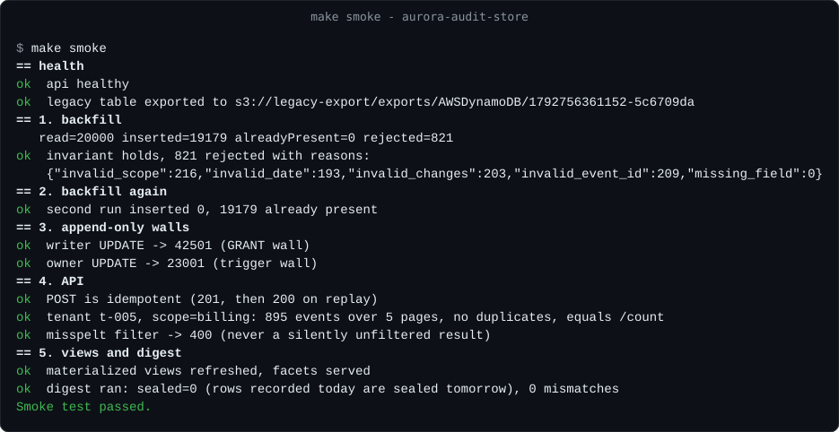

On this page
Executive summary
The whole story in thirty seconds.
The problem
An audit log in DynamoDB silently dropped matching events, could be edited by anyone with write access, and deleted regulated records on a timer it called retention.
The approach
Move it to Aurora PostgreSQL where correctness is enforced: filters before paging, two append-only walls, a daily hash chain in a locked bucket, and retention by immutable copies.
The outcome
Complete results with exact counts, a log even its owner can’t rewrite unnoticed, and a backfill that accounts for every event — checked end to end in CI on seeded data.
The twelve failures
Cheap, scalable and fast for “the last 50 events of this invoice”. Then the audit grid grew filters, and auditors started asking for exports.
| Symptom | Root cause | Fixed by |
|---|---|---|
| Filtering by date, user, action and text was slow and expensive | No combination was a key condition, so reads became scans with a filter, capped at 100 pages | one WHERE, indexes per read path |
| Some matching events never showed up | A page was fetched first and filtered after, so matches outside it were dropped silently | filters applied before LIMIT |
| No page numbers, no totals | Forward-only paging with no cheap count | keyset paging + exact COUNT |
| Filter dropdowns needed a scan | No DISTINCT | materialized facet views |
| Events missing from project views | One overloaded index key held a project or a tenant, never both | separate typed columns |
| A scope view returned an arbitrary page | It fell back to a full scan, which is not time order | newest-first btree indexes |
| Bad data was accepted | No types: misspelled scopes and malformed values stored as-is | enum, UUID, CHECK constraints |
| Events could overwrite each other | The sort key used whole seconds as the change number | identity tiebreaker + unique event id |
| Records were deleted automatically | The 7-year retention was a TTL, an expiry with no copy | retention by locked copies |
| Append-only was a convention | Any writer could overwrite or delete an event, and nothing proved otherwise | two walls + hash chain |
| Storage grew faster than the data | Four indexes projecting every attribute stored each item five times | btree indexes, no copies |
| Exports were capped and built in the browser | One read of up to 5,000 items | out of scope — see the companion async export pipeline |
A composite of problems met in production systems, not one company’s incident; product details and numbers are changed. Full write-up: docs/01-the-problem.md.
What the replacement had to guarantee
Twelve failures became ten requirements: the acceptance test for the design.
- Complete resultsAny combination of filters, applied before paging, with exact counts.
- Stable pagingKeyset pagination that stays correct while new events arrive.
- Cheap facetsFilter dropdowns and daily counts for dashboards without scans.
- Typed, unique eventsValidated columns and a unique idempotency key per event.
- Append-only, provablyEnforced by the database, not by convention.
- Tamper evidence outsideSo even the database owner cannot rewrite history unnoticed.
- Retention by copiesImmutable copies, never deletion.
- Secured by defaultEncryption at rest and in transit, rotated credentials, least privilege, alerting.
- A lossless moveExisting history moved across without losing or duplicating a single event, and proven.
- Reasonable costFor a log written all day and read in bursts.
Who it serves
Support answers “who changed this?”, security investigates, and external auditors check that the product records what it claims to record.
Support & security
Read the log every day
- Job
- Find exactly the events that match, fast, and trust the count.
- Pain points
- Results that looked complete but weren’t; no totals or page numbers; slow, expensive filters.
- What the design gives them
- Any filter combination before paging, exact counts, keyset paging and cheap facets.
Auditors & compliance
Check the record itself
- Job
- Know the log is complete, unchanged and kept for seven years.
- Pain points
- Append-only by convention; records deleted by a TTL; nothing that proves the log was not edited.
- What the design gives them
- Two walls with proofs on every deploy, a hash chain in a locked bucket, locked monthly backups.
Engineers & operators
Run and change the store
- Job
- Deploy schema safely and move years of history without drama.
- Pain points
- “Deployed the code, forgot the migration”; no safe way to move data; storage that multiplied.
- What the design gives them
- Migrations inside the deployment, a reconciled backfill, rotated roles and alarms.
The evidence
The end-to-end smoke test, as printed by a CI run: backfill twice, both walls, the API and the hash chain, on seeded demo data.

From the repository’s CI (make smoke locally). The 20,000 legacy items are seeded demo data with about 4% deliberately bad, so the rejects are expected.
Solution architecture
Every component talks to the database in a private network, each with the least-privileged role it needs. Evidence and copies live outside the database, under locks.
- Record line
- Evidence line
- Retention line
- Owner and reader roles
System map
Figure 1Product services write and the audit grid reads through one API with a JWT authorizer. The digest job reads with the reader role and writes the hash chain to the locked bucket. Secrets Manager holds the owner, writer and reader passwords, rotated every 30 days.
| Piece | Locally (docker compose) | On AWS (CDK) |
|---|---|---|
| Database | PostgreSQL 16 | Aurora PostgreSQL 16, Serverless v2 (0.5–4 ACU), optional reader |
| Credentials | Fixed dev passwords | Secrets Manager, customer-managed KMS key, 30-day rotation |
| Migrations + proofs | One-shot migrate container | CloudFormation custom resource, re-run when the SQL checksum changes |
| API | Node server | Lambda behind an HTTP API with a JWT authorizer |
| Legacy table + export | LocalStack DynamoDB, simulated export | The real table with PITR, ExportTableToPointInTime |
| Evidence | LocalStack S3 | S3 with Object Lock (compliance mode in prod) |
| Backups | — | AWS Backup monthly, Vault Lock, cross-region copy |
Decisions
Seven architecture decision records. The two that make the log provable lead.
Append-only, enforced twice
ADR-0002- Context
- An auditor needs a control that holds even when one layer is misconfigured: a role granted too much, or a trigger disabled.
- Decision
- A GRANT wall (writers only INSERT and SELECT, error 42501) and a trigger wall that stops UPDATE, DELETE and TRUNCATE even for the owner (error 23001), proven on every deploy.
- Result
- A compromised application credential cannot edit history; corrections are new events.
Tamper evidence outside the database
ADR-0004- Context
- The owner can always disable a trigger, and evidence in the same database could be rewritten by the same person.
- Decision
- A daily SHA-256 hash chain over closed row ranges, written to an S3 Object Lock bucket the job can write but not delete; re-verified on a schedule.
- Result
- A rewritten row is detected afterwards, and a mismatch or a stale digest alarms.
Aurora PostgreSQL instead of DynamoDB
ADR-0001- Context
- The read side is ad-hoc filters, time order, exact counts and facets; every new filter meant a new index or a scan.
- Decision
- Aurora PostgreSQL 16, Serverless v2, 0.5 to 4 capacity units, writer-only with an optional reader.
- Result
- Correctness moves into the database: types, constraints, uniqueness and the walls.
Migrations inside the deployment
ADR-0003- Context
- CloudFormation can’t run DDL, the cluster has no public endpoint, and code must never start against an unexpected schema.
- Decision
- A custom resource keyed on the SHA-256 of the migrations applies them in one transaction, sets role passwords and runs the proofs.
- Result
- Schema and code ship and roll back together.
Retention by copies, never by expiry
ADR-0005- Context
- The old “7-year retention” deleted regulated records on a timer.
- Decision
- No expiry column; point-in-time recovery, monthly AWS Backup under Vault Lock for 7 years with a cross-region copy, and a monthly Parquet archive.
- Result
- Deleting history means breaking a lock, not forgetting a TTL.
Backfill from a point-in-time export
ADR-0006- Context
- Years of history must move without losing, duplicating or silently fixing an event, and someone else must be able to check.
- Decision
- Export at a fixed point in time, deterministic ids, reject never coerce, ON CONFLICT DO NOTHING, an asserted invariant and a second run.
- Result
- The backfill can be stopped and re-run at any time.
Rotated password roles
ADR-0007- Context
- Least privilege per component and rotating credentials, without restarts.
- Decision
- Owner, writer and reader roles with their own secrets, rotated every 30 days; pools retry once on an auth error.
- Result
- Normal pooling, no per-connection signing.
Implementation
The mechanisms that carry the guarantees, drawn on the same three lines.
Two append-only walls
Figure 2Each wall is enough on its own and fails with its own error code, so a test can tell which one stopped a statement. Every deploy runs 16 proofs; CI disables the trigger and requires the owner proofs to fail, which shows the proofs can detect a hole.
The hash chain
Figure 3The owner can still disable a trigger, so the evidence lives where the owner cannot reach it. Rows are hashed inside the database with the reader role; recent blocks are re-verified daily and all blocks monthly, and a mismatch or a stale digest alarms.
The backfill
Figure 4Rejects are a list for a human, never a silent fix. The function refuses to write a manifest unless every item read is inserted, already present or rejected, and the second run must insert nothing.
The cutover
Figure 5Protect the old data first, move it second, switch writes third, and retire the old table only after someone other than the operator has signed off the reconciliation. The full checklist is in docs/04-cutover-runbook.md.
Running it safely
The controls that keep the guarantees true after the first deploy.
- Migrations inside the deploymentA custom resource applies SQL in one transaction, sets role passwords and runs the proofs; any failure rolls the deploy back.
- Checksum drift is an errorAn applied migration whose file changed never re-runs silently; removing the stack never drops data.
- Three roles, rotatedOwner, writer and reader secrets rotate every 30 days; pools drop and retry once on an auth error, with no restart.
- TLS and a private networkTLS forced and verified against the RDS CA; Lambdas in private subnets with no NAT.
- Alarms on what mattersCapacity, connections, deadlocks, restarts, digest mismatch and age, archive freshness, mutation attempts, reads of the owner secret.
- Gates in CI130+ CDK assertions, a dependency-cycle test, a DBA gate for destructive SQL, cdk-nag with zero unsuppressed findings.
Trade-offs
The costs the ADRs accept on purpose, written down rather than hidden.
| Chose | Instead of | The cost, and why it’s worth it |
|---|---|---|
| Aurora Serverless v2 | More GSIs, or DynamoDB plus a search index | A capacity floor that bills while idle, in exchange for arbitrary predicates, counts, constraints and enforceable append-only. |
| Two walls + a hash chain | Trusting the owner | The owner can still disable a trigger; the chain detects a rewritten row afterwards, and reads of the owner secret alarm. |
| Monthly locked backups | Daily recovery points | Daily points over 7 years would be about 2,555 locked snapshots; between PITR and the monthly archive the recovery point is up to a month, documented. |
| Backfill from a PITR export | Dual-write, scanning the live table or Streams replay | PITR must be on first, but there is a fixed snapshot to reconcile against and no read capacity is used. |
| Rotated password roles | IAM database auth or RDS Proxy | Pools must survive a rotation; in return no per-connection signing and no extra always-on proxy. |
| No automated heavy-lock DDL | Migrating everything automatically | Large-table locking changes stay a deliberate, reviewed step. |
Results
What is verified, and how.
| Claim | How it is verified |
|---|---|
| Schema, walls, proofs, negative control | Integration tests on real PostgreSQL 16 in CI |
| Filters, keyset paging, the LIMIT-before-filter regression | Integration tests and the compose smoke test |
| Backfill invariant, rejects, second run inserts 0 | Integration tests and the smoke test: 20,000 read, 19,179 inserted, 821 rejected with reasons; second run 0 inserted |
| The hash chain seals and detects a rewritten row | Integration tests |
| Infrastructure | 130+ CDK assertions, cycle detector, DBA gate, cdk-nag with zero unsuppressed findings, real synth |
| Live deployment | Deployed on AWS and running in production: credential rotation through the VPC endpoints, the export into a locked bucket and the owner-secret alarm |
System figures
| Setting | Value | Why |
|---|---|---|
| Immutability proofs per deploy | 16 | Inconclusive never counts as a pass. |
| Retention | 7 years | Monthly locked recovery points with a cross-region copy. |
| Point-in-time recovery | 35 days | The operational safety net in the prod stage (7 days in dev). |
| Credential rotation | 30 days | Absorbed by the pools without a restart. |
| Facet and daily-count refresh | 10 min | Dropdowns and dashboards without scans. |
| Capacity | 0.5–4 ACU | An audit log is written all day but read in bursts. |
| Estimated monthly floor | ~$145 / ~$190 | Dev / prod, from the infrastructure README; most of it is the capacity floor and private endpoints. |
Configuration values and the cost estimate come from the repository’s documentation; they describe how the system is built, not production KPIs.
Try it yourself
PostgreSQL, LocalStack, the migrate job and the API run locally with one command.
$ git clone https://github.com/the3ma/aurora-audit-store.git $ cd aurora-audit-store $ make up # db, localstack, migrate (schema + role passwords + proofs), api $ make seed # 20,000 legacy DynamoDB items, about 4% deliberately bad $ make smoke # export -> backfill twice -> both walls -> API -> views -> digest
No Docker? npm ci && npm run test:pg:local runs the integration suite on an embedded PostgreSQL 16. More in docs/03-running-locally.md.
Lessons
What carries over to the next system that has to be trusted by an auditor.
- A control you can’t prove is a convention.Run the proof on every deploy, and prove the proof works with a negative control.
- Keep evidence where its subject can’t reach it.A hash chain in the same database can be rewritten by the same person.
- Retention means being able to produce the record.A timer that deletes is the opposite of retention.
- A migration is finished when someone else can check it.An invariant, a manifest and a second run that inserts nothing.
What’s next
The roadmap, with the trade-off each step carries.
Monthly partitioning
Once a disposal policy exists; the unique event id would have to include the partition key, a deliberate trade-off.
Incremental rollups
Instead of full materialized-view refreshes as the table grows.
Outbox and proxy
A transactional outbox for writers that can’t share a transaction, and RDS Proxy if connections come under pressure.
Need records an auditor can trust?
I design and build systems like this one. If you are hiring, or have an audit trail that has to hold up, I’d like to hear about it.